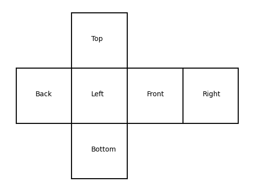
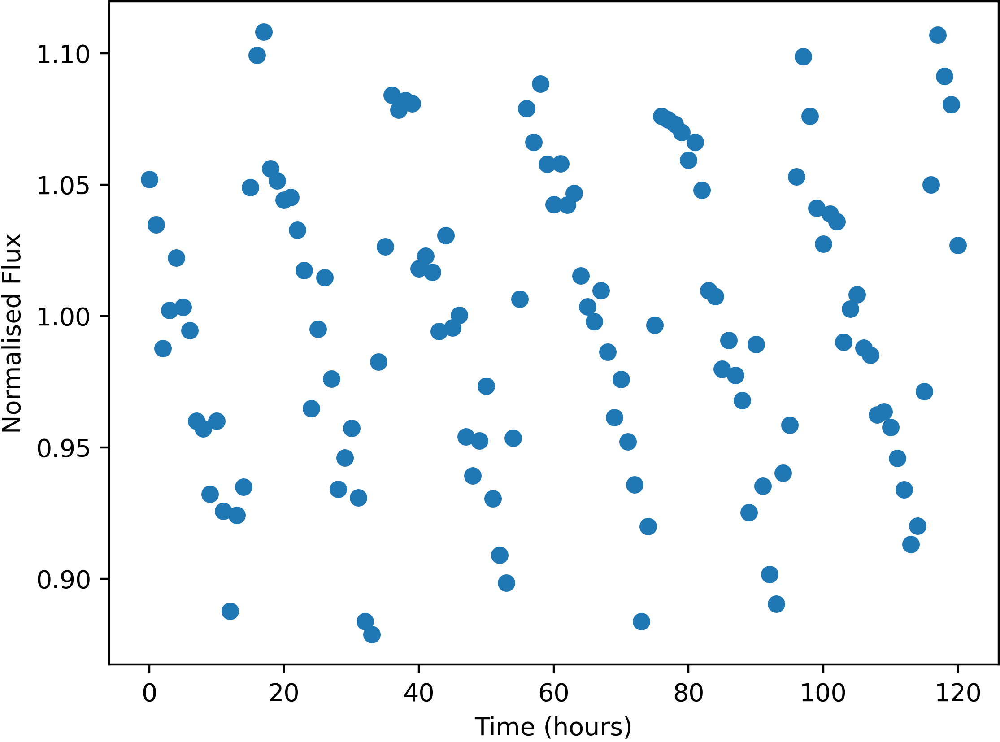

Some stars in the sky were found to change in apparent brightness over time, usually following a periodic trend.

Example of a variable star lightcurve - star LeftS76995
Units of the variable data are:
Uncertainties in this data (one standard deviation) are:
Here is a list of the flashes detected, with their approx. positions and number of photons detected. Positions are given by where they would appear in the relevant wide-field camera image. Positions are only accurate to 0.05 degrees (one standard deviation).
The X-Ray camera is sensitive to burts of more than 174 photons only.
| Name | Direction | X | Y | Photon-Count |
|---|---|---|---|---|
| FE01 | Back | -36.64 | -41.12 | 325 |
| FE02 | Left | 34.36 | -36.51 | 736 |
| FE03 | Top | -3.29 | 26.34 | 582 |
| FE04 | Right | 15.32 | -4.59 | 371 |
| FE05 | Right | 16.94 | 22.03 | 340 |
| FE06 | Left | 30.21 | -2.90 | 363 |
| FE07 | Back | 7.78 | -14.21 | 471 |
| FE08 | Front | -14.98 | 21.13 | 543 |
| FE09 | Left | 24.17 | -23.51 | 396 |
| FE10 | Bottom | 31.80 | -6.52 | 1642 |
| FE11 | Bottom | 3.11 | -4.72 | 78606 |
| FE12 | Top | -9.66 | -10.91 | 2986 |
| FE13 | Top | 15.58 | 2.43 | 409 |
| FE14 | Back | -35.79 | 6.01 | 1178 |
| FE15 | Left | -23.06 | -29.88 | 1755 |
| FE16 | Left | -0.58 | -25.12 | 20349412 |
| FE17 | Front | -14.98 | 21.39 | 493 |
| FE18 | Bottom | 4.49 | 12.58 | 408 |
| FE19 | Top | -33.20 | -4.09 | 4145 |
| FE20 | Bottom | 35.76 | -4.97 | 372 |
| FE21 | Left | -23.77 | -29.99 | 1727 |
| FE22 | Front | 17.12 | -23.60 | 377 |
| FE23 | Right | 17.05 | 22.06 | 378 |
| FE24 | Left | -22.77 | -29.11 | 1658 |
| FE25 | Bottom | -13.85 | -0.39 | 1200 |
| FE26 | Bottom | 19.78 | 16.57 | 101427 |
| FE27 | Top | -8.93 | -11.10 | 3036 |
| FE28 | Right | 14.97 | -4.43 | 353 |
| FE29 | Back | 4.77 | -6.56 | 635 |
| FE30 | Right | 27.61 | -40.31 | 759 |
| FE31 | Bottom | 1.92 | -7.10 | 976 |
| FE32 | Right | 27.55 | -40.44 | 686 |
| FE33 | Left | -41.27 | 29.85 | 523 |
| FE34 | Bottom | -7.86 | 5.84 | 570 |
| FE35 | Right | -6.17 | -21.27 | 796 |
| FE36 | Right | 5.97 | 1.70 | 1368 |
| FE37 | Left | -6.96 | -25.96 | 751 |
| FE38 | Bottom | 2.98 | 4.02 | 71664 |
| FE39 | Right | 10.50 | -0.18 | 635 |
| FE40 | Bottom | -13.40 | -0.28 | 1215 |
| FE41 | Left | 30.25 | -2.83 | 366 |
| FE42 | Back | -29.99 | 5.22 | 252 |
| FE43 | Front | -3.85 | -7.04 | 7563340 |
| FE44 | Front | -2.23 | -38.50 | 392 |
| FE45 | Bottom | -26.81 | -20.33 | 1804 |
| FE46 | Right | 27.96 | -39.97 | 755 |
| FE47 | Left | 10.31 | -33.69 | 498 |
| FE48 | Left | 23.35 | 39.40 | 363 |
| FE49 | Front | -14.72 | 21.20 | 504 |
| FE50 | Back | 8.47 | -18.47 | 455 |
| FE51 | Bottom | 4.49 | 12.58 | 395 |
| FE52 | Bottom | -27.21 | -20.49 | 1935 |
| FE53 | Top | -3.33 | 26.25 | 525 |
| FE54 | Bottom | 26.68 | -3.05 | 361 |
| FE55 | Top | -10.03 | -11.62 | 2972 |